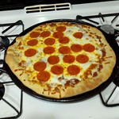

<!DOCTYPE html>
<html lang="en"></html>
<head>
    <meta charset="UTF-8">
    <meta name="viewport" content="width=device-width, initial-scale=1.0">
    <meta http-equiv="X-UA-Compatible" content="ie=edge">
    <title>pizza Recipe</title>
</head>
<body>
    <h1>Pizza</h1>
<a href="../index.html">Back to homepage</a> / <a href="lasagna.html">Lasagna</a> / <a href="birria.html">Birria</a> / <a href="pizza.html"><b>Pizza</b>></a> / <a href="tacos.html">Tacos</a>
<p>Pizza is a beloved dish that originated in Italy and has since become a global favorite. It typically consists of a round, flat base of dough topped with tomato sauce, cheese, and various toppings such as vegetables, meats, and herbs. The pizza is then baked in an oven until the crust is crispy and the cheese is melted and bubbly. There are many different styles of pizza, including Neapolitan, New York-style, Chicago deep-dish, and more. Pizza is often enjoyed as a casual meal with friends and family, and it can be customized to suit individual tastes and preferences.</p>
           
           <p>This is a family favorite on Friday night.</p>
              <h2>Ingredients</h2>
              <ul>
                  <li>2 1/4 teaspoons active dry yeast (1 packet)</li>
                  <li>1 1/2 cups warm water (110°F)</li>
                  <li>3 1/2 to 4 cups all-purpose flour</li>
                  <li>2 tablespoons olive oil</li>
                  <li>2 teaspoons sugar</li>
                  <li>1 teaspoon salt</li>
                  <li>1/2 cup pizza sauce</li>
                  <li>2 cups shredded mozzarella cheese</li>
                  <li>Your favorite toppings (pepperoni, mushrooms, bell peppers, onions, olives, etc.)</li>
                </ul>
                <h2>Directions</h2>
                <ol>
                    <li>In a small bowl, dissolve the yeast in warm water. Let it sit for about 5 minutes until it becomes frothy.</li>
                    <li>In a large mixing bowl, combine 3 1/2 cups of flour, olive oil, sugar, and salt. Pour in the yeast mixture and stir until a dough forms.</li>
                    <li>Turn the dough onto a floured surface and knead for about 8-10 minutes, adding more flour as needed to prevent sticking. The dough should be smooth and elastic.</li>
                    <li>Place the dough in a lightly oiled bowl, cover it with a damp cloth or plastic wrap, and let it rise in a warm place for about 1 to 1 1/2 hours or until it has doubled in size.</li>
                    <li>Preheat your oven to 475°F (245°C). If you have a pizza stone, place it in the oven to heat up.</li>
                    <li>Once the dough has risen, punch it down and turn it out onto a floured surface. Divide the dough in half if you want to make two pizzas.</li>
                    <li>Roll out the dough into a circle or rectangle, depending on your preference. Transfer it to a piece of parchment paper for easy handling.</li>
                    <li>Spread a thin layer of pizza sauce over the dough, leaving a small border around the edges. Sprinkle the shredded mozzarella cheese evenly over the sauce, and add your favorite toppings.</li>
                    <li>If using a pizza stone, carefully slide the parchment paper with the pizza onto the hot stone. If not, place the pizza on a baking sheet.</li>
                    <li>Bake for about 12-15 minutes, or until the crust is golden and the cheese is bubbly and slightly browned.</li>
                    <li>Remove the pizza from the oven and let it cool for a few minutes before slicing and serving. Enjoy!</li>
                </ol>
           </body>
    </html>